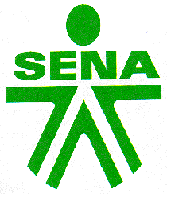

SERVICIO NACIONAL DE APRENDIZAJE SENA
REGIONAL ANTIOQUIA
EL CENTRO DE CONFECCIONES A TRAVÉS DE ACCIONES DE MEJORAMIENTO CONTINUO, FORMA TALENTO HUMANO INTEGRAL Y CREATIVO

TRAZO Y CORTE INDUSTRIAL
RAMIRO SEPÚLVEDA PÉREZ
NELSON AGUDELO ORTEGA
Itaguí, febrero 2000